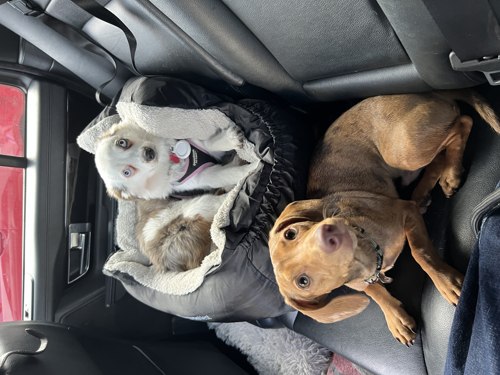

In terms of experience with ccoding it is not too extensive but it is something that I have been recently eager to dive into. With class exeriences I took a class in highschool but that was something that wasn't that serious. Last semester I took a interaction class that was intresting but it was my teachers first year teaching so class organization could have been better. Javascript was for sure a challenge but the use for it is crucial. I liked css the best as it allowed for big creative freedom so early on.
I am excited as I feel this class is something you have to constantly participate in-order to truly learn.
In my professional career I don't want to code but it is an asset for the tool belt. Understanding how everyrthing in the process of design particularaly brand design it is very imporant to comprhend the process of each stages and with that is coding. So at least have some what of an understanding will provided a much more efficient wotkflow.
Each of the languages rely on each other for a cohesive platform. HTML is the basic function and sturcture of a web platform. CSS is the styling of the content such as color, typeface, images and things like that. Javascript in when the responsive factor comes to play, an example is when a cursor hovers over something for a specific amount of time it can tirgger a chain reactions programed in javascript, I could be wrong but that is what I think based off my raw understanding.
Described as a code sharing platform this program allows deisgners to share and collaborate with project containg

This image is something that brings me joy. This was taken when I arrived back home to La and I brought my dog (brown weiner one). He was very excited and I feel that this image was able to a wide breath of emotions which is nice to have.